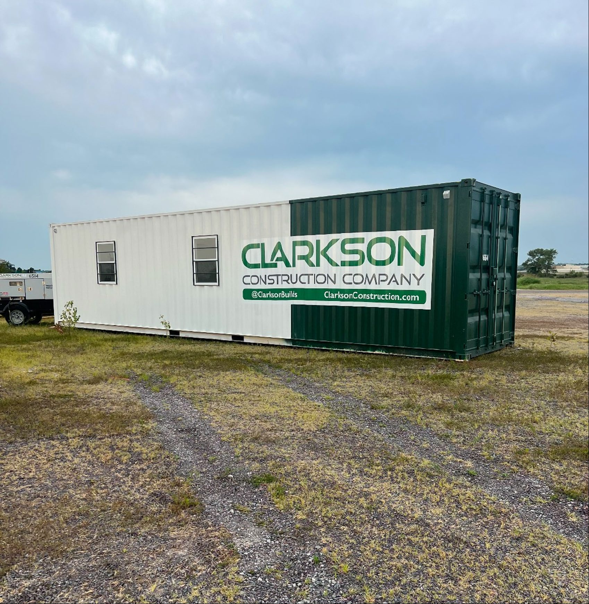
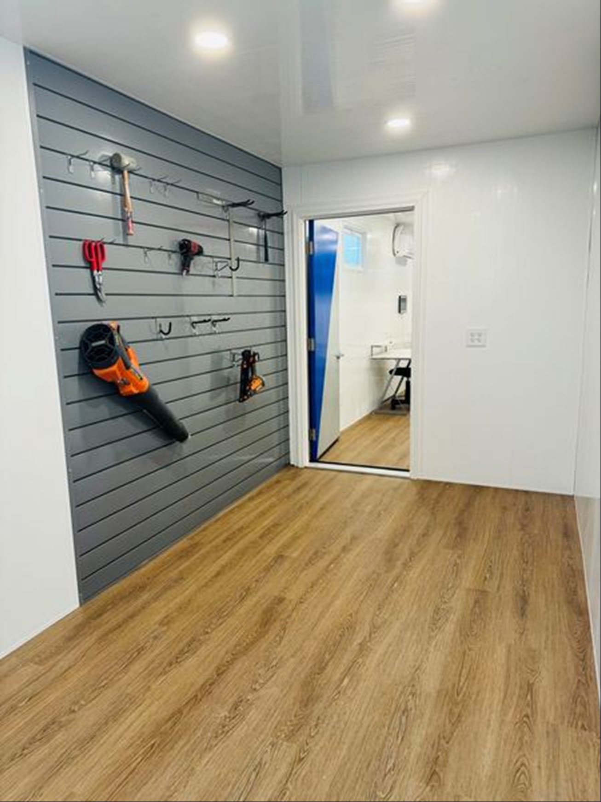
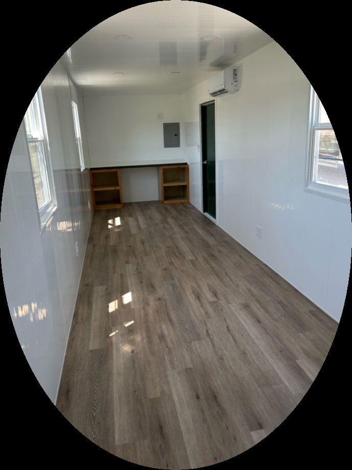
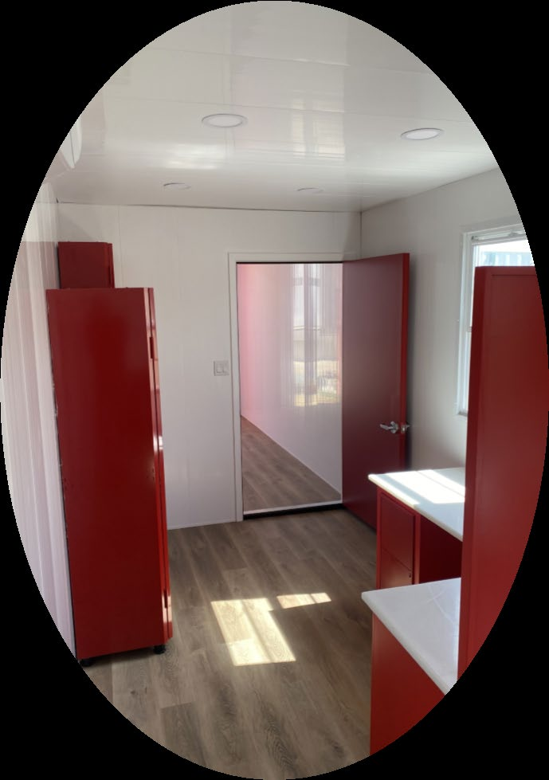
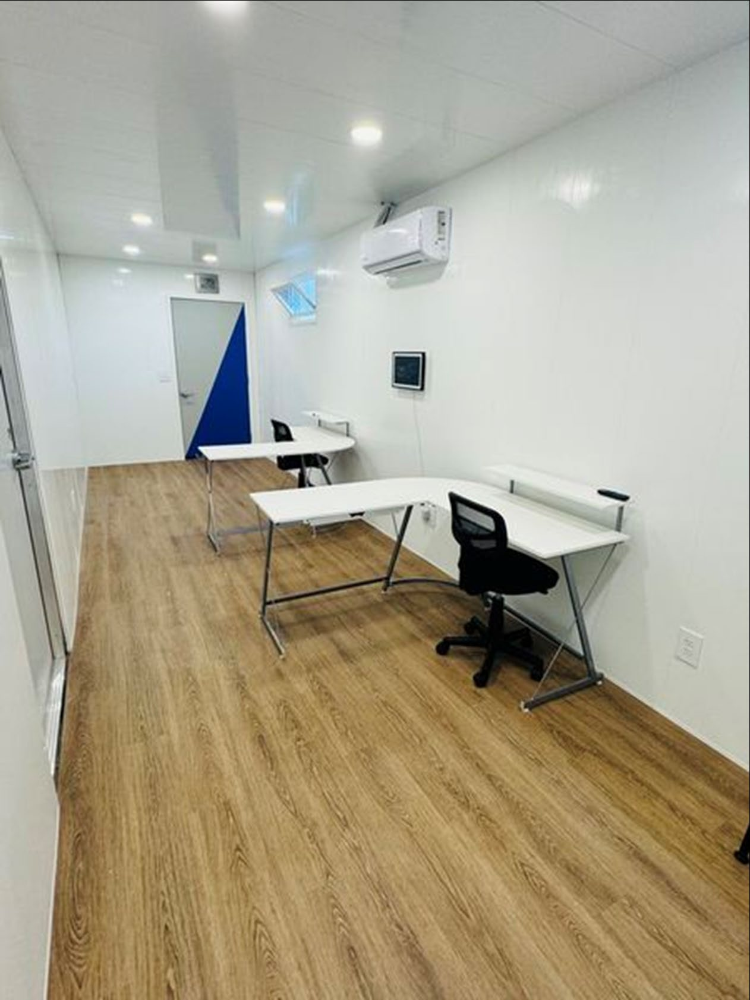

Secure, reusable shipping-container storage and office/storage combinations for contractors, utilities, heavy-civil crews and field operations across Kansas, Missouri and Oklahoma.
620 Fabrication builds job-site storage boxes that help construction teams protect tools and materials, mobilize faster and reuse the same field assets from project to project.

From a single secure construction storage container to standardized fleets deployed across multiple jobs, 620 Fabrication can build around your field operations.
Keep tools, materials and field equipment protected from theft and weather.
Preconfigure storage, shelving, lighting and workspace so crews can move between jobs faster.
Use repeatable configurations across regions, project teams and equipment yards.
Jobsite storage boxes, construction storage containers, contractor storage containers, tool storage containers, job-site office containers and shipping-container office/storage combinations.




620 Fabrication is based in Pittsburg, Kansas and supports contractors that need secure construction storage containers, office/storage combinations and repeatable fleet configurations across the region.
Call with your project location, container quantity and the storage or office layout you need.